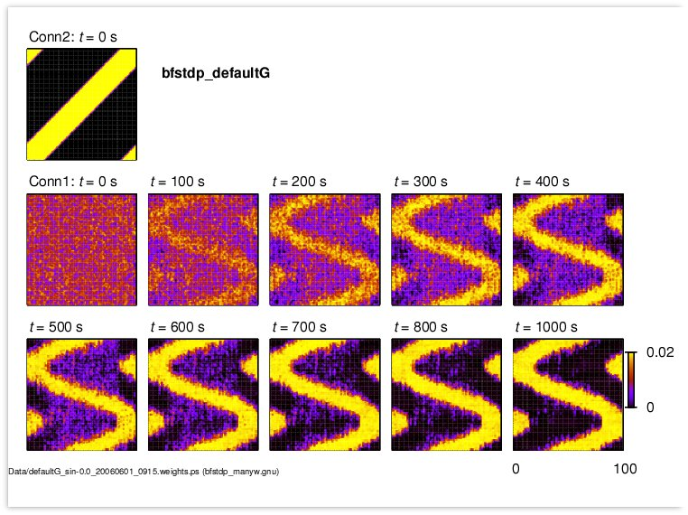

The bfstdp_demo.hoc (which runs on Auto-launch) runs the learning procedure for 10000 s (about 3 hours) and displays the weight matrix from Input to Output layers together with the time-evolution of three of the weights. The simulation takes 20 minutes or so, but you should be able to see the weight patterns begin to form, as in Figure 2 of the J. Neurosci. paper, before this time. Data files are produced in a subdirectory called Data, and may be plotted using Matlab, Gnuplot (use pm3d in map view), etc. A sample graphing program, bfstdp_many.gnu, is provided but must be modified by globally changing the date and time from 20071217_1201 to the time recorded in the filenames in the Data directory. When you run the file in linux with the command "gnuplot bfstdp_many.gnu" it will then produce a postscript file that looks similar to: 